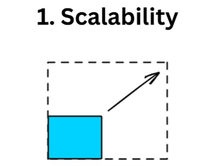
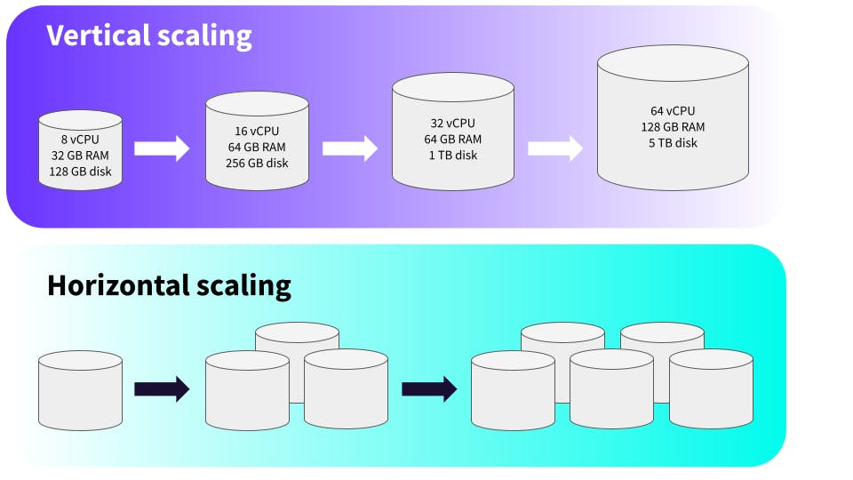

System Design Mastery
Master scalable systems with premium insights
🚀 Scalability: Handling Growth
1️⃣ What is Scalability?
Scalability is the ability of a system to handle increasing load by adding resources without performance degradation.
In simple words:
Scalability = Can your system grow when users grow?

2️⃣ Why Does Scalability Exist?
Because users grow.
Today:
1,000 users
Tomorrow:
1 million users
Without scalability, systems that work today will fail tomorrow.
3️⃣ What Breaks Without It?
If a system is not scalable:
- ⚙️ Servers get overloaded
- ⏱️ Response time increases
- 💥 Frequent crashes
📌 Real-World Example:
A college app works fine for 100 users → crashes when 10,000 students log in together.
4️⃣ When to Use Scalability / When NOT to Use
✅ When Scalability is Needed:
- 🌐 Public-facing applications
- 📈 Products expecting growth
- 📅 Seasonal traffic (sales, exams)
- 🚀 Startups aiming to scale
❌ When Heavy Scalability is NOT Needed:
- 🔒 Small personal projects
- 👥 Fixed-user systems
📋 Real Examples:
- ✅ E-commerce: High-traffic product sites
- ✅ Payment apps: Growth expected
5️⃣ One Common Mistake
🚨 Scaling Without Fixing Bottlenecks
- ➕ Adding more servers
- 🐌 But database is still slow
- ❌ System doesn't improve
👉 Always find the real bottleneck before scaling.
6️⃣ Real App Connection
- 💬 Millions of users send messages at the same time
- 📊 Uses horizontal scaling + distributed databases
- ➕ If users double, they add more servers
- ✅ That's scalability.
7️⃣ Types of Scalability

1️⃣ Vertical Scaling (Scale Up)
Add more power to one machine.
Examples:
- 💾 More RAM
- ⚡ Better CPU
- 📦 Bigger disk
✅ Pros:
- Easy to do
- No big architecture changes
❌ Cons:
- Hardware limit
- Expensive
- Single point of failure
👉 Like upgrading from a bike to a superbike — still one rider.
2️⃣ Horizontal Scaling (Scale Out)
Add more machines instead of upgrading one.
Examples:
- 🖥️ 10 servers instead of 1
- ⚖️ Load balancer distributes traffic
✅ Pros:
- No hard limit
- Fault tolerant
- Used by big systems
❌ Cons:
- More complex
- Needs good design
👉 Like having many riders on different bikes.
⬆️ Vertical Scaling - Use it when:
- 📱 App is small
- 👥 Few users
- 🎓 College project / early stage
- ⚡ Need quick fix
➡️ Horizontal Scaling - Use it when:
- 📈 Many users
- 🚀 Traffic is high
- 🔒 App must not go down
🎯 Quick Decision:
📱 Small App
↓
Vertical Scaling
🌐 Big App
↓
Horizontal Scaling
🔄 Real-World Flow (How Companies Do It)
Start with vertical scaling (Add more RAM/CPU)
Reach server limits (Can't upgrade anymore)
Introduce load balancer (Distribute traffic)
Move to horizontal scaling (Add more servers)
Add caching, sharding, CDN (Optimize the system)
Vertical scaling → "Add more power to one server"
Horizontal scaling → "Add more servers to share the load"
🧠 Summary
Scalability is critical for systems expecting growth. You can scale vertically (upgrade existing servers) or horizontally (add more servers).
Horizontal scaling is preferred for large systems because it's fault-tolerant and has no hard limits. Always identify bottlenecks before scaling to ensure your effort pays off.
💡 Pro Tip
Design for scalability from day one, even if you don't need it immediately. It's much harder to refactor a monolithic application than to start with scalable patterns. Choose technologies and architectures that support horizontal scaling, and always keep stateless design principles in mind. Use load balancers, caching, and distributed databases to ensure your system can handle 10x growth without breaking.